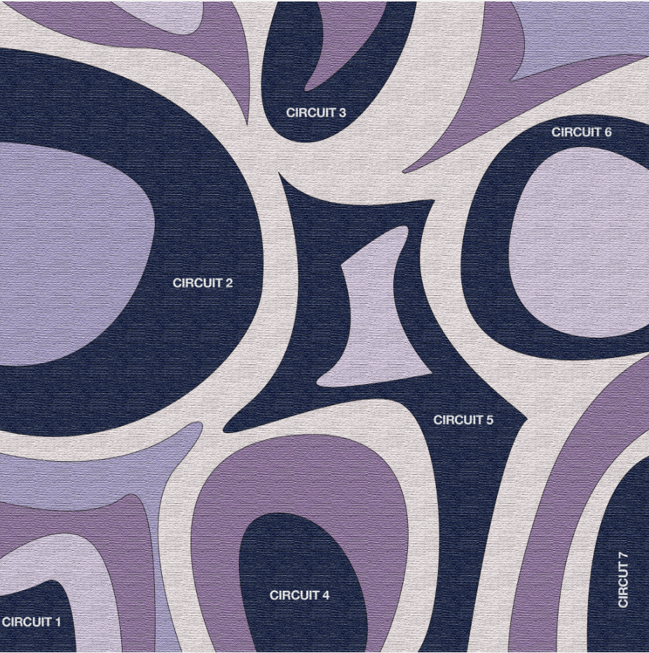
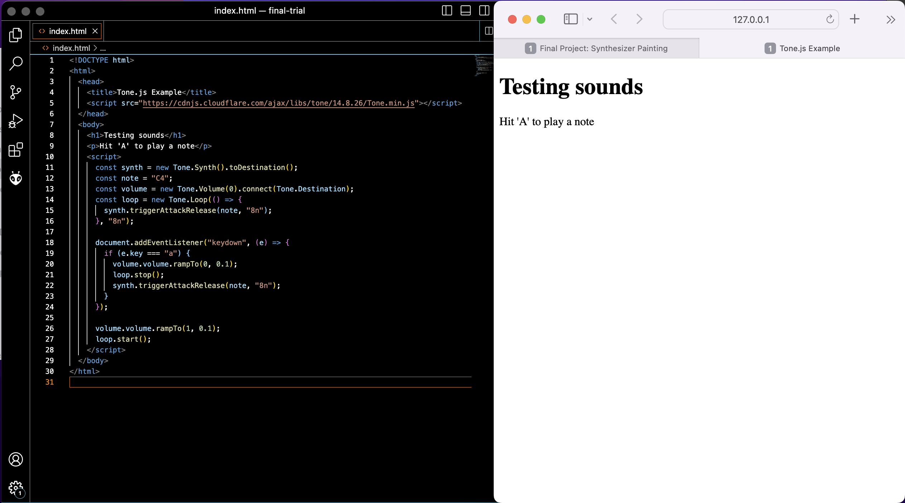
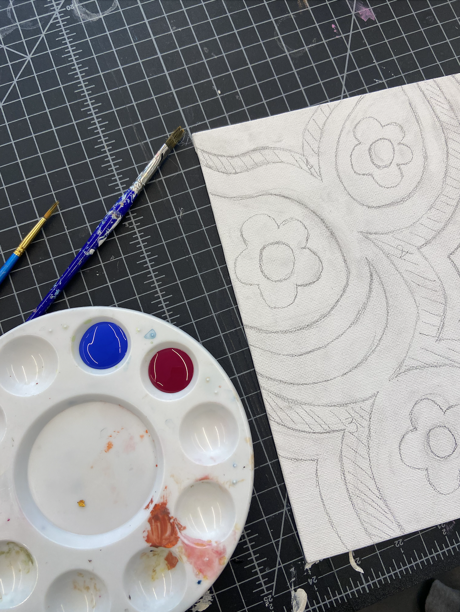

Final Project: Synthesizer Painting
Introduction
For the final project in BC3930: Creative Embedded Systems, we were free to create any artwork that makes use of our ESP32-powered TTGO T1 microcontrollers. For my project, I wanted to create an interactive synthesizer painting. My enclosure is my painted canvas, and the conductive paint acts as electric circuits along with copper tape. I wanted to get creative with the hardware choices, so after some research, I found that touching conductive paint can create a voltage disruption in the circuit, due to the internal resistance of the human body which acts as a potentiometer or voltage divider. Hence, the idea is that, when a person touches the area of conductive paint, it sends an analog signal to the ESP32, which in turn communicates to my laptop through the WebSerial API. The API reads values in the serial monitor and outputs sounds accordingly.
Motivation
My vision for this project is to create an immersive and multisensory experience for the viewer. I want to transport them into a world where they are not just passive observers but active participants in the creation of art. I want them to explore the painting, touch different areas, and be delighted by the unexpected sounds that emerge. By making this painting, I create a dynamic interface that responds to human touch to challenge the traditional mediums of art.
I also appreciate the fact that art does not have to be convoluted - I had a lot of fun making this project and using my basic knowledge of circuits to create something new. It feels almost magical that touching a canvas can trigger electrical signals and cause a change in my laptop. The whole experience of it is also unique to whoever the current audience is, depending on which circuits they touch and notes they produce. The following is a high-fidelity sketch of my canvas, which was then streamlined in the actual implementation from 6 to 4 circuits.
Implementation & Logic
To make it easier for myself, the first step of the project is to initialize a webpage that is able to take in a trigger and output a sound. This way, I can just modify the html code later on to take in input from WebSerial, which is the trickier part to figure out. I used the Tone.js library to generate my sounds. The following is a code snippet of a loop that is constantly playing a note at 0% volume, but breaks out and enters a new loop that plays the note at 100% volume when a change is detected - in this case, the change came from the button ‘A’ being pressed down.
The next step is the bulk of the work - preparing the canvas and the artwork. With spring transitioning into summer, I was thinking a lot about flowers recently and decided to incorporate them into my painting. Using a 5”x7” canvas, I sketched out a few funky lines which will act as either a circuit, or a divider between circuits. I also sketched out flowers for added appeal. I then marked out 4 lines which will act as the circuits
Using the conductive paint from Bare Conductive, I painted over these lines, before going over the rest of the canvas with acrylic paint. After letting it dry, I pasted copper tape along the back of the canvas to connect the ends of the circuit paths in front to form a complete circuit. After that, I soldered wires onto the copper tape at specific points to establish connections for each circuit.
To set up the connection between hardware and software, I connected the wires from the canvas in the breadboard at 4 different ESP32 pins, and then I used AnalogRead to load the voltage readings on each circuit. The values being read ranged from 300 to 1000 when the wires are connected to a complete circuit. When the wires are disconnected, the analog values would drop significantly to around 70, and sometimes 0. The voltage values read by the ESP32 during analog readings come from the changes in resistance within the conductive paint circuits on the canvas. When a person touches the conductive paint, it creates disruptions in the electrical potential, resulting in voltage changes. I ultimately decided to use wired connection instead of wireless given the time frame, and given that I only had 4 wires to connect it felt much easier.
On the laptop, a web page or web application is set up to receive and process the data transmitted by the ESP32. This webpage utilizes the WebSerial API, which allows communication between the laptop's web browser and the ESP32 microcontroller via the serial port. JavaScript code is written on the webpage to listen for incoming data from the ESP32 through the WebSerial API. The webpage is set to turn up the volume of a note when a change in voltage is detected at the serial monitor. As a benchmark, I set this to the analogue value of each circuit to be less than 150.
Technical Issues
I ran into several unexpected issues. During the development of my project, I encountered an issue with inconsistent and noisy analog readings. I think the problem was due to factors like poor conductivity of the paint, variations in the pressure applied during touch interactions, and external interference affecting the circuit signals. To address this, I made sure there was proper contact between the conductive paint and the wires by soldering them onto the copper tape. I then checked for any loose connections or gaps that could disrupt the flow of current. Additionally, I also applied multiple layers of paint to enhance the overall conductivity.
I also had an issue regarding unresponsiveness or noticeable delays in the interaction between user touch on the conductive paint and the resulting changes on the webpage. The problem arose due to various factors that affected the overall responsiveness of the system. One primary factor was the latency introduced by the communication between the ESP32 microcontroller and the laptop via the serial port and WebSerial API. This communication pathway, although efficient, introduced some inherent delay. Ultimately, for the scope of the project, I decided the delay is permissible.
For the messages being sent through the serial port, I encountered difficulties in accurately adjusting the sound triggers based on the received analog values. The presence of significant noise in the signals made it challenging to establish precise thresholds for triggering the sounds. To mitigate the impact of noise and ensure more reliable sound triggering, I tried to implement a filtering mechanism. Eventually, I decided to edit my code so that the laptop outputs sounds only when the analog values are below a certain benchmark - in this case I set it to be 150 as I found that this was the most reasonable window.
Conclusion
Throughout the development process, I encountered various challenges and learned several key lessons. One major takeaway from this project is the significance of meticulous circuit design and implementation. Ensuring proper contact between the conductive paint and the wires, optimizing conductivity, and addressing noise issues were crucial steps in achieving reliable analog readings. The attention to detail in hardware setup and troubleshooting was essential for creating a robust and responsive interactive system. Moreover, working with communication protocols between the ESP32 and the laptop provided valuable insights into optimizing data transfer and minimizing latency. Understanding the intricacies of the serial port and utilizing the WebSerial API effectively enhanced the responsiveness and overall performance of the project. Another important learning point was the need for iterative code refinement. By continuously testing, debugging, and adjusting the code, I was able to fine-tune the sound triggers, filter out noise, and create a more immersive user experience. This iterative process fostered a deeper understanding of sound synthesis, analog-to-digital conversion, and data interpretation. Moving forward, I definitely want to undertake more art-tech fusion projects like such, although sometimes figuring out what went wrong is an extremely tedious process. Nonetheless, the whole experience always comes out to be rewarding.